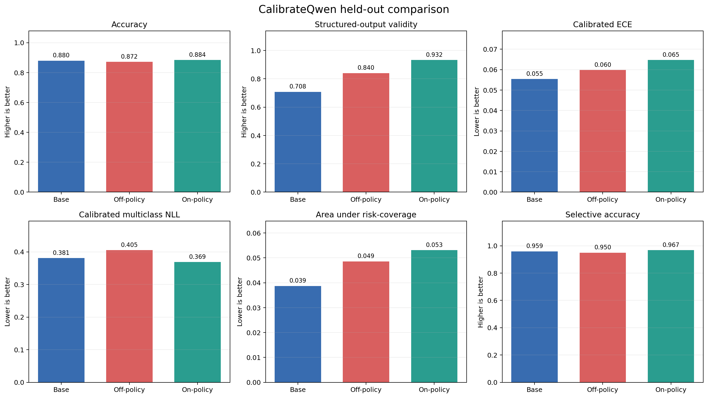
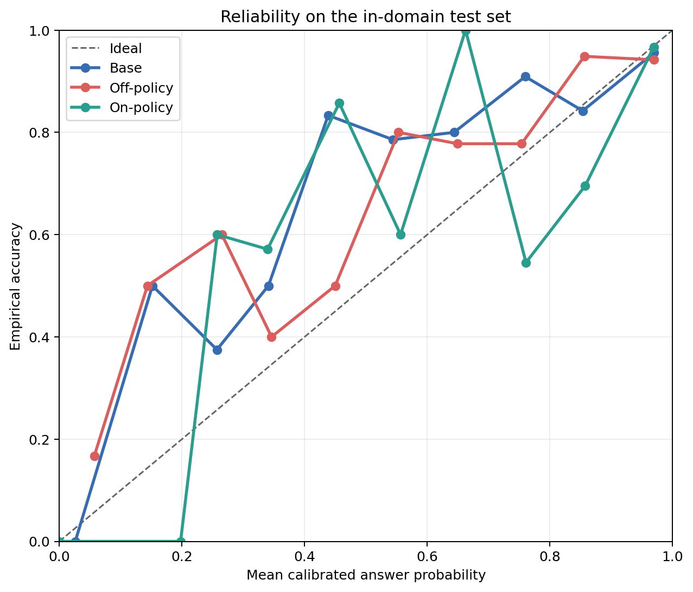
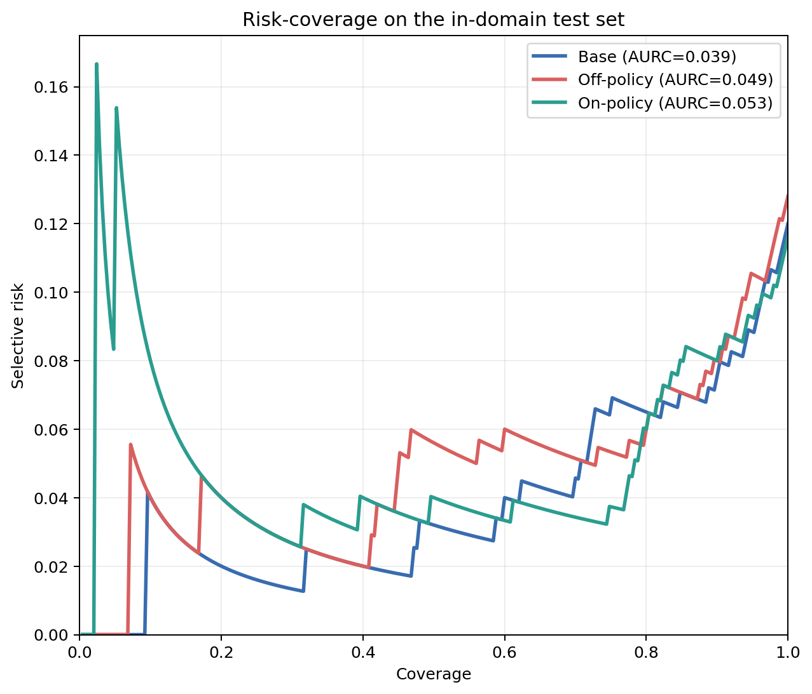
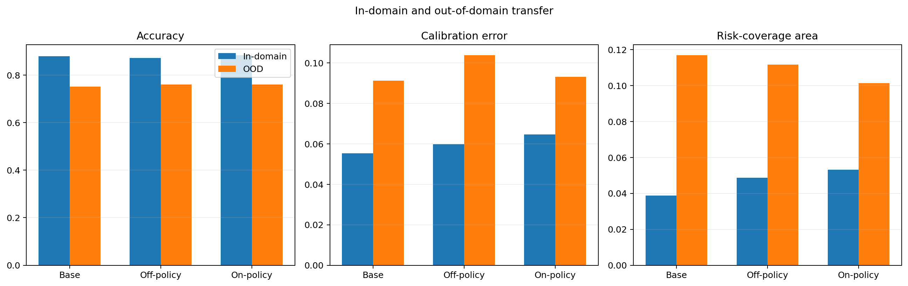
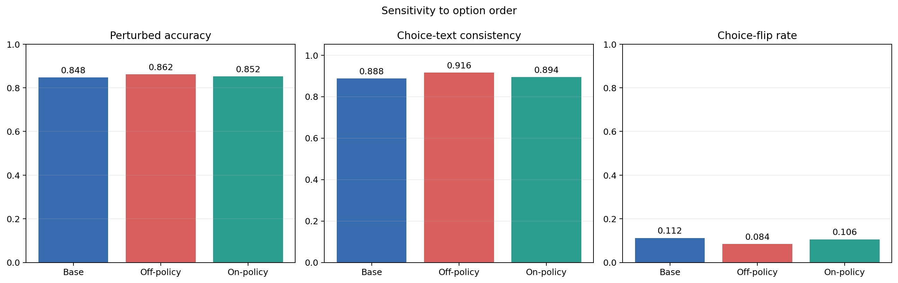
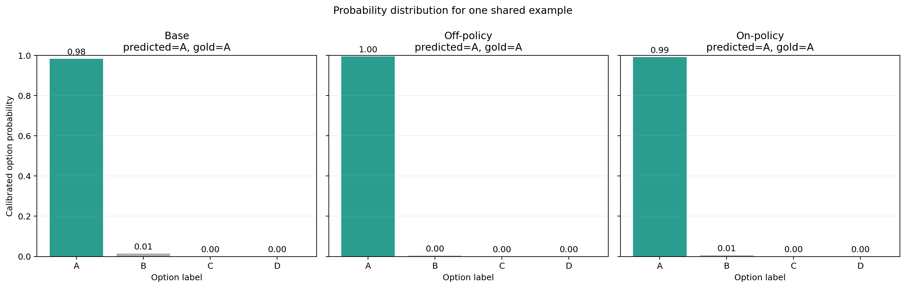

Know When You Don’t Know
Abstract
We study whether a compact 4B language model can be trained to answer multiple-choice questions, report a useful confidence value, and abstain when it is likely to be wrong. We compare three checkpoints of Qwen/Qwen3.5-4B: the pretrained base, a fixed-sequence off-policy distillation of a Qwen3.5-9B teacher, and an on-policy KL distillation of the same teacher. All three are evaluated with the same sampler, parser, calibration protocol, and record set. On a 250-record in-domain test split, on-policy distillation is the only recipe that improves structured-output validity (0.708 to 0.932), reduces verbal expected calibration error (0.231 to 0.118), and improves selective accuracy at a fixed 80 percent validation coverage (0.959 to 0.967). Off-policy distillation improves format validity to 0.840 but leaves calibration and error confidence unchanged. All three models degrade by 12 to 13 accuracy points on the CommonsenseQA out-of-domain split, and the on-policy checkpoint transfers the smallest NLL penalty. We publish the code, the curated dataset, and the unified report artifacts.
Introduction
A useful confidence signal on a language model is not the number the model prints inside a JSON field. It is a scalar that separates correct answers from incorrect ones, degrades gracefully out of domain, and stays stable when the surface form of the question is perturbed. Most instruction-tuned models emit a confidence value that fails at least one of these tests. The verbal number saturates near 1.0. The number does not track a hold-out risk-coverage curve. The number changes when the multiple-choice option order is shuffled.
This work asks a narrow question. Given a 4B student and a 9B teacher of the same family, can distillation transfer accuracy and a calibrated confidence signal into the student without breaking the structured output contract that a downstream system needs? The comparison is between two classical recipes: off-policy distillation on fixed teacher completions with a soft target at each supervised position, and on-policy distillation that samples from the student and applies a reverse KL to the teacher.
The three arms measured in this report are:
- Base.
Qwen/Qwen3.5-4Bwith no fine-tuning. - Off-policy. Fixed teacher completions with top-K teacher targets per position.
- On-policy. Student rollouts scored by the teacher, with a reverse-KL update.
The full model matrix in the repository also includes hard-label SFT, teacher-completion SFT, and an SFT-then-on-policy chain. The unified report evaluated in this post covers the three arms above at a 250-record evaluation limit.
Background
The calibration failure mode
For a classifier that outputs a probability \(p\) on an event that occurs with frequency \(q\), calibration is the property that \(p\) approximates \(q\). Expected calibration error partitions predictions into equal-width confidence bins and averages the gap between mean confidence and empirical accuracy inside each bin:
\[ \operatorname{ECE} = \sum_{m=1}^{M}\frac{|B_m|}{N}\left|\operatorname{acc}(B_m) - \operatorname{conf}(B_m)\right|. \]
Instruction-tuned language models tend to concentrate verbal confidence near 1.0. Verbal ECE measured on the base checkpoint below is 0.231, driven by two failure modes rather than one. The first is genuine overconfidence on wrong answers. The second is a schema failure: when the model omits the abstain field the parser drops its confidence to zero, and the record lands in the lowest bin at high accuracy. Both effects inflate ECE, but only the first is a calibration problem.
Off-policy versus on-policy distillation
Off-policy distillation defines a fixed target sequence per prompt, then trains the student to match the teacher distribution at every position of that sequence. Let \(\mathcal{V}_K\) be the top-K teacher targets retained at position \(t\). The loss is a token-level cross entropy against the teacher:
\[ \mathcal{L}_{\text{off}} = -\sum_{t}\sum_{v \in \mathcal{V}_K} p_T(v \mid x, y_{<t})\log p_S(v \mid x, y_{<t}). \]
The target trajectory is drawn from the teacher, not the student. If the student prefers a different path through the response, off-policy training never sees it.
On-policy distillation samples from the current student and evaluates the same tokens under the teacher. It applies a reverse KL on the student’s own occupied distribution:
\[ \operatorname{KL}(p_S \Vert p_T) = \mathbb{E}_{y \sim p_S}\left[\log p_S(y \mid x) - \log p_T(y \mid x)\right]. \]
The gradient is computed on trajectories the student actually visits at inference time. This addresses the covariate-shift problem of off-policy imitation, at the cost of extra teacher queries per training step.
Structured output as a first-class objective
A model that emits an unparsable JSON object is not a partial success. The parser cannot recover the answer, and the downstream router cannot decide whether to defer. This report treats format validity as a metric on the same axis as accuracy, and it treats invalid outputs as incorrect predictions with confidence zero for threshold analysis. That convention rewards recipes that satisfy the output contract as well as the accuracy target.
Data
Sources and splits
The training mixture is drawn from ARC-Challenge, OpenBookQA, and selected MMLU subjects. CommonsenseQA is held out as an out-of-domain source. Held-out records from each training source form the in-domain test split. Two deterministic option-order permutations of each in-domain example form the robustness split. Splits, counts, and roles are:
| Split | Records | Purpose |
|---|---|---|
| Train | 9,134 | In-domain training mixture |
| Phase 1 train | 2,000 | Economical pipeline and SFT validation |
| Validation | 1,000 | Temperature and threshold fitting |
| In-domain test | 1,163 | Held-out ARC, OpenBookQA, MMLU |
| OOD test | 3,000 | Held-out CommonsenseQA |
| Option-shuffled test | 2,326 | Two permutations per in-domain example |
Record schema
Every record is stored as a normalized JSON object with a stable identifier derived from the question and source. The identifier supports resume, cross-file joins, and parent-child relationships for perturbations.
{
"id": "65e031c0d44323dc",
"source": "openbookqa",
"subject": "science_reasoning",
"question": "Which option best explains the observation?",
"choices": ["choice A", "choice B", "choice C", "choice D"],
"answer_index": 1,
"answer_label": "B",
"prompt": "Question: ...",
"split": "train"
}Teacher targets
We generated repeated teacher samples from Qwen/Qwen3.5-9B on the 2,000-record Phase 1 subset with five samples per question. Modal answer, agreement confidence, and a representative justification are stored per record. Teacher statistics:
| Statistic | Value |
|---|---|
| Unique records | 2,000 |
| Requested samples | 10,000 |
| Valid parsed samples | 9,914 |
| Parse rate | 99.14% |
| Modal teacher accuracy | 89.80% |
| Mean agreement confidence | 95.79% |
| Unanimous records | 1,724 |
| Unanimous rate | 86.20% |
Agreement confidence for a question \(x\) with sampled labels \(a_1, \ldots, a_K\) is the mode frequency:
\[ c_T(x) = \frac{1}{K}\sum_{k=1}^{K}\mathbf{1}[a_k = \hat{a}_T], \qquad \hat{a}_T = \operatorname{mode}(a_1, \ldots, a_K). \]
Five samples quantize this value in increments of 0.2. That is a design constraint of the sampling budget, not of the analysis.
Methods
Model choices
The student is Qwen/Qwen3.5-4B and the teacher is Qwen/Qwen3.5-9B. Both use the qwen3_5_disable_thinking renderer to keep responses short and structured. LoRA rank 32 is used for all training runs.
Structured output contract
The student is trained to emit a single JSON object per question:
{
"answer": "C",
"confidence": 0.8,
"justification": "Option C follows from the causal relation stated in the prompt.",
"abstain": false
}The parser enforces four constraints: answer must be one of the option labels listed in the prompt, confidence must be a scalar in [0, 1], justification must be one non-empty sentence, and abstain must be a JSON boolean. A missing or malformed field flips schema_valid to false and floors confidence to zero for the risk-coverage analysis.
Off-policy distillation
Fixed teacher completions are drawn from the modal Phase 1 samples. At every supervised position the teacher distribution is queried and the top 20 targets are retained. The student is trained against the resulting soft targets under the Tinker train_off_policy recipe:
from training.train_off_policy import OffPolicyConfig, train_off_policy
config = OffPolicyConfig(
conversation_file="artifacts/training/teacher_numeric.jsonl",
log_path="artifacts/runs/off_policy",
model_name="Qwen/Qwen3.5-4B",
teacher_model="Qwen/Qwen3.5-9B",
learning_rate=1e-4,
batch_size=16,
lora_rank=32,
n_teacher_targets=20,
teacher_concurrency=16,
)
await train_off_policy(config)On-policy distillation
The on-policy recipe samples two rollouts per prompt, evaluates them under the teacher, and applies the reverse-KL update through Tinker’s train_on_policy recipe. Sixteen prompt groups are batched per step and each rollout is truncated at 192 output tokens.
from training.train_on_policy import OnPolicyConfig, train_on_policy
config = OnPolicyConfig(
prompt_file="artifacts/training/prompts_on_policy.jsonl",
log_path="artifacts/runs/on_policy",
model_name="Qwen/Qwen3.5-4B",
teacher_model="Qwen/Qwen3.5-9B",
kl_coefficient=1.0,
rollouts_per_prompt=2,
group_size=16,
max_output_tokens=192,
)
await train_on_policy(config)Post-hoc calibration
A one-parameter temperature is fit on 1,000 validation predictions by searching 300 candidate values on a geometric grid between 0.25 and 4.0. The objective is validation multiclass NLL on the answer-token distribution. An abstention threshold is then selected to hit a target coverage of 0.80 on the same validation split. The fitted calibration object is applied to in-domain, OOD, and robustness splits without re-fitting.
def fit_temperature(records, labels, grid=np.geomspace(0.25, 4.0, 300)):
best_t, best_nll = 1.0, float("inf")
for t in grid:
nll = mean_nll_after_temperature(records, labels, t)
if nll < best_nll:
best_t, best_nll = t, nll
return best_t, best_nllThe three fitted temperatures on this run are 1.043 (base), 0.789 (off-policy), and 1.082 (on-policy). Only the off-policy distribution is under-confident enough on validation to receive a sharpening temperature below 1.0.
Evaluation protocol
Every checkpoint is sampled with the same renderer, decoding configuration, parser, and record set. Two confidence sources are recorded per record: the verbal number the model prints inside its JSON, and a token-level answer probability computed by scoring each candidate answer label under an answer-only prompt and normalizing the resulting log-likelihoods:
\[ p(a_k \mid x) = \frac{\exp \log p_\theta(a_k \mid x)}{\sum_j \exp \log p_\theta(a_j \mid x)}. \]
Metrics reported per split:
- Accuracy on parsed records; invalid records count as incorrect.
- Format validity (fraction of records that satisfy the schema).
- Expected calibration error on both confidence sources.
- Multiclass Brier and NLL on the answer distribution.
- Risk-coverage curve, AURC, and selective accuracy at the validation-selected threshold.
- Mean confidence on errors, as a direct read of overconfidence severity.
The evaluation limit for this report is 250 records per split. This is a smoke-scale evaluation, not the full held-out set. Absolute numbers are subject to sampling noise at this size; relative comparisons between models on the same 250 records are the intended read.
Results
In-domain summary
| Model | Acc | Format | Verbal ECE | Token ECE (cal) | Brier | NLL | AURC | Mean conf on errors | Selective acc @ 0.8 cov |
|---|---|---|---|---|---|---|---|---|---|
| Base | 0.880 | 0.708 | 0.231 | 0.055 | 0.189 | 0.381 | 0.039 | 0.574 | 0.959 |
| Off-policy | 0.872 | 0.840 | 0.223 | 0.060 | 0.200 | 0.405 | 0.049 | 0.568 | 0.950 |
| On-policy | 0.884 | 0.932 | 0.118 | 0.065 | 0.183 | 0.369 | 0.053 | 0.647 | 0.967 |
Three observations:
- Accuracy moves inside noise. All three arms are within 1.2 points of each other on 250 records. This is the correct outcome for a distillation study: the point of the intervention is not to change the answer, it is to change how the model represents its confidence in the answer.
- Format validity is the metric that separates the recipes. Off-policy training raises validity from 0.708 to 0.840. On-policy training raises it to 0.932. The parser is the first consumer downstream of the model, so this is not a cosmetic gain.
- Verbal ECE drops from 0.231 to 0.118 under on-policy training. Most of this gain is the collapse of the schema-invalid bin, which was floored to zero confidence in the base checkpoint. Token-level ECE, which is not sensitive to schema failures, remains near 0.05 to 0.06 across all three arms.

Reliability
The verbal confidence distribution is essentially bimodal. Records either land in the [0.0, 0.1] bin because the parser floored an invalid record to zero, or they land in the [0.9, 1.0] bin because the model wrote a confidence close to 1.0. Nothing sits in between.
| Model | Records in [0.0, 0.1] | Accuracy in bin | Records in [0.9, 1.0] | Confidence in bin | Accuracy in bin |
|---|---|---|---|---|---|
| Base | 50 | 0.880 | 194 | 0.956 | 0.897 |
| Off-policy | 40 | 0.875 | 210 | 0.970 | 0.871 |
| On-policy | 14 | 0.786 | 236 | 0.968 | 0.890 |
The reliability diagram makes the same point visually. The upper bin is close to the diagonal for all three arms. The gap between the diagonal and the upper bin is 0.06 for base, 0.10 for off-policy, and 0.08 for on-policy. The primary driver of the verbal-ECE improvement is the disappearance of the schema-invalid cohort.

Risk and coverage
At a validation-selected threshold of 0.868 for base, 0.845 for off-policy, and 0.891 for on-policy, all three arms exceed 95 percent selective accuracy on the in-domain test split. On-policy is the only recipe that both hits a higher answered coverage on the test split (0.736 vs 0.688 for base) and a higher selective accuracy (0.967 vs 0.959). The AURC values are close, and the small AURC increase for the trained arms is driven by the fact that a larger fraction of their predictions are considered under the curve.

Out-of-domain transfer
CommonsenseQA is held out and never touched during training. All three arms lose 12 to 13 accuracy points from the in-domain to the OOD split. On-policy retains the lowest NLL and the lowest AURC on OOD, and it also carries the highest format validity into the new domain.
| Model | Domain | Records | Accuracy | ECE | NLL | AURC | Format validity |
|---|---|---|---|---|---|---|---|
| Base | In-domain | 250 | 0.880 | 0.055 | 0.381 | 0.039 | 0.708 |
| Base | OOD | 250 | 0.752 | 0.091 | 0.834 | 0.117 | 0.892 |
| Off-policy | In-domain | 250 | 0.872 | 0.060 | 0.405 | 0.049 | 0.840 |
| Off-policy | OOD | 250 | 0.760 | 0.104 | 0.842 | 0.112 | 0.936 |
| On-policy | In-domain | 250 | 0.884 | 0.065 | 0.369 | 0.053 | 0.932 |
| On-policy | OOD | 250 | 0.760 | 0.093 | 0.807 | 0.101 | 0.944 |

Option-order robustness
Each in-domain example is duplicated with two deterministic option permutations, producing 500 paired records per model. The evaluation joins base and perturbed predictions by parent identifier and compares the selected choice text, not the label:
| Model | Pairs | Base acc on pairs | Perturbed acc | \(\Delta\) acc | Choice-text consistency | Flip rate |
|---|---|---|---|---|---|---|
| Base | 500 | 0.880 | 0.848 | -0.032 | 0.888 | 0.112 |
| Off-policy | 500 | 0.872 | 0.862 | -0.010 | 0.916 | 0.084 |
| On-policy | 500 | 0.884 | 0.852 | -0.032 | 0.894 | 0.106 |
Off-policy training produces the lowest flip rate. On-policy training does not close the robustness gap with the base checkpoint. This is a real difference between the recipes: fixed-target imitation appears to reduce sensitivity to option order, while student-sampled rollouts do not.

Per-source breakdown
The gains from on-policy training are concentrated on MMLU and ARC-Challenge. OpenBookQA is a small regression on both trained arms.
| Model | Source | Records | Accuracy | ECE | AURC | Format validity |
|---|---|---|---|---|---|---|
| Base | arc_challenge | 23 | 1.000 | 0.160 | 0.000 | 1.000 |
| Base | mmlu | 129 | 0.884 | 0.042 | 0.049 | 0.504 |
| Base | openbookqa | 98 | 0.847 | 0.074 | 0.038 | 0.908 |
| Off-policy | arc_challenge | 23 | 0.913 | 0.119 | 0.008 | 0.913 |
| Off-policy | mmlu | 129 | 0.899 | 0.081 | 0.057 | 0.752 |
| Off-policy | openbookqa | 98 | 0.827 | 0.050 | 0.043 | 0.939 |
| On-policy | arc_challenge | 23 | 0.913 | 0.087 | 0.006 | 0.870 |
| On-policy | mmlu | 129 | 0.915 | 0.087 | 0.064 | 0.907 |
| On-policy | openbookqa | 98 | 0.837 | 0.079 | 0.038 | 0.980 |
The MMLU improvement in format validity is the largest single effect: 0.504 for the base to 0.907 for the on-policy checkpoint. The base model is not formatting MMLU responses correctly half the time. On-policy training does more to fix the JSON schema on MMLU than it does to fix any answer.
A qualitative sample
The following prediction from the on-policy checkpoint illustrates how the calibration protocol interacts with the emitted JSON on an OpenBookQA record:
{
"question": "People can touch something to see if it's",
"choices": ["shiny", "red", "striped", "wrinkled"],
"gold": "D",
"raw_prediction": "{\"answer\":\"D\",\"confidence\":0.95,\"justification\":\"Touching is the primary sense used to detect texture, such as whether something is wrinkled, whereas the other options are visual properties.\",\"abstain\":false}",
"verbal_confidence": 0.782,
"option_probabilities": {"A": 0.196, "B": 0.018, "C": 0.004, "D": 0.782},
"abstain_after_calibration": true
}The model wrote 0.95 and false, but the token-level answer probability is 0.78. That value is below the fitted abstention threshold of 0.89, so the calibration layer flips abstain to true. Two-thirds of the mass is on D, but the tail on A is a fifth of the distribution. The calibration layer is doing exactly the job it was fitted for: it defers when the underlying distribution is not sharp enough, even when the printed number is confident.

Discussion
Verbal confidence is not the calibration signal
Verbal ECE drops from 0.231 to 0.118 across the three arms, but the underlying calibration curve for the confident bin barely moves. The main effect is that on-policy training removes the schema-invalid cohort, which had been dumped into the zero-confidence bin. Anyone reporting verbal ECE alone is measuring format compliance as much as they are measuring calibration.
The token-level answer probability behaves differently. It is a continuous quantity, it responds to temperature scaling, and it changes in ways that separate the recipes on the risk-coverage axis. This is the calibration signal a downstream selector should consume, not the verbal number the model prints.
On-policy training buys format compliance
Format validity is the metric that moves most under both recipes. Off-policy raises it from 0.708 to 0.840. On-policy raises it to 0.932. The MMLU per-source result is more extreme: 0.504 to 0.907. This is a real product effect. A router that has to decide whether to answer, defer, or escalate cannot do that without a valid JSON object. Both recipes deliver this, and on-policy delivers more of it.
The mechanism is intuitive. Off-policy training shows the student a fixed target once, at teacher-drawn positions. On-policy training samples from the student’s own distribution, so any tokens the student produces that violate the schema receive a corrective KL gradient. If the student has a persistent tendency to omit a field, on-policy training visits that failure mode and updates it. Off-policy training does not.
Robustness does not follow the same ordering
Off-policy has the lowest option-order flip rate. On-policy does not. This is the one axis where fixed-target imitation appears to help more. The mechanism here is also intuitive: fixed teacher targets are stable in a way that student rollouts are not, and the student learns to reproduce the same content across positional variants. On-policy rollouts are stochastic. The student sees more variation, which improves format compliance and calibration, but does not by itself fix a sensitivity to option order.
A combined recipe of teacher-completion SFT followed by on-policy distillation is on the experiment matrix and not run in this report. That recipe is the natural way to try to buy the robustness of the fixed-target regime and the format compliance of the on-policy regime in the same checkpoint.
The OOD gap is uniform
All three arms lose the same amount of accuracy on CommonsenseQA. Neither distillation recipe closes the OOD gap, and neither opens it further. On-policy retains the lowest OOD NLL and the lowest OOD AURC, which is consistent with the in-domain read that its confidence signal is doing more useful work than the verbal number would suggest.
Limitations
- Evaluation scale. Every split in this report is evaluated at 250 records. Confidence intervals on individual entries are wide. Relative comparisons on the same 250 records are the intended read; absolute accuracies should be treated as smoke-scale.
- Missing arms. Hard-label SFT, teacher-completion SFT, and the SFT-then-on-policy chain are on the experiment matrix but not measured in this unified report.
- Quantized teacher confidence. Teacher agreement confidence is derived from five samples and therefore quantized in increments of 0.2. This restricts the fidelity of any confidence target derived from teacher agreement.
- Verbal ECE is a mixed metric. Because invalid outputs are floored to confidence zero, verbal ECE mixes calibration and format compliance. Token-level ECE is the cleaner signal.
- Single seed. Each recipe is trained and evaluated with one seed. Variance across seeds is not reported here.
- Same model family. Both student and teacher are Qwen 3.5. The cross-family transfer question is not addressed.
Conclusion
On-policy distillation from a 9B teacher into a 4B Qwen student improves the metrics that a downstream system consumes. Structured-output validity rises from 0.708 to 0.932. Verbal ECE drops from 0.231 to 0.118, mostly because the schema-invalid bin disappears. Selective accuracy at a fixed 80 percent validation coverage rises from 0.959 to 0.967. Off-policy distillation improves format validity but does not move calibration or error confidence. Off-policy is the only recipe that improves option-order robustness. Neither recipe closes the 12-point OOD gap on CommonsenseQA, though on-policy retains the lowest OOD NLL.
The two recipes are not interchangeable and they are not strictly ordered. On-policy training buys format compliance and calibration. Off-policy training buys robustness to surface perturbation. The natural next experiment is the SFT-then-on-policy chain that is already staged in the repository, plus a rerun at full evaluation scale with multiple seeds.
The full code, curated dataset, and unified report artifacts are available at AutoRegressive-Bhasha/calibrate_qwen.